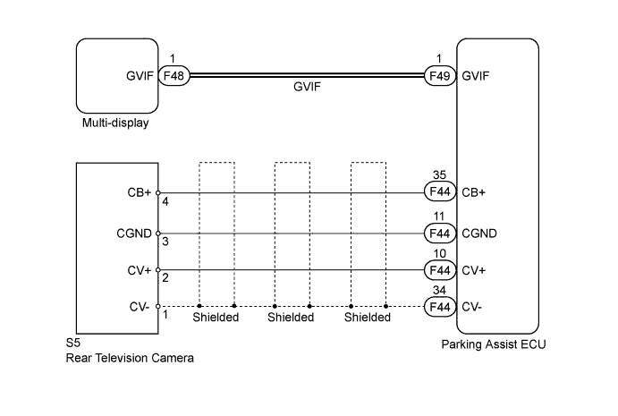
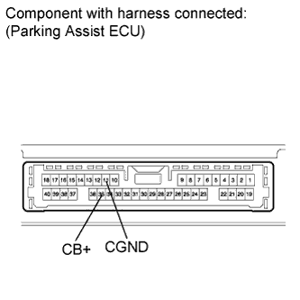
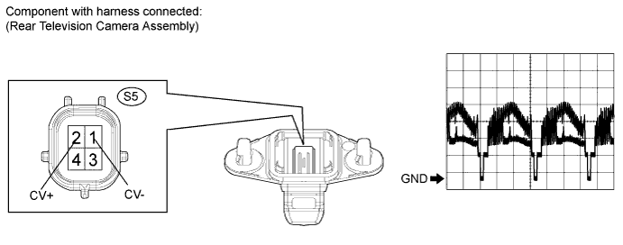
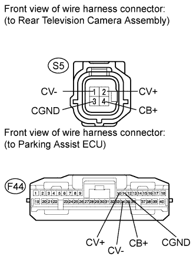

DTC 5C-40 Camera Picture Error |
| DTC Code | DTC Detection Condition | Trouble Area |
| 5C-40 | An open or short in the rear television camera signal circuit. |
|

| 1.CHECK PARKING ASSIST ECU |
 |
Measure the voltage according to the value(s) in the table below.
| Tester Connection | Condition | Specified Condition |
| F44-35 (CB+) - F44-11 (CGND) | Engine switch on (IG), shift lever is moved to R | 5.8 to 6.5 V |
|
| ||||
| OK | |
| 2.CHECK REAR TELEVISION CAMERA ASSEMBLY |

Using an oscilloscope, check the waveform.
| Item | Content |
| Terminal No. (Symbol) | S5-2 (CV+) - S5-1 (CV-) |
| Tool Setting | 0.2 V/DIV., 0.2 μs/DIV. |
| Condition | Engine switch on (IG), shift lever in R |
|
| ||||
| OK | |
| 3.CHECK HARNESS AND CONNECTOR (REAR TELEVISION CAMERA - PARKING ASSIST ECU) |
 |
Disconnect the S5 camera connector.
Disconnect the F44 ECU connector.
Measure the resistance according to the value(s) in the table below.
| Tester Connection | Condition | Specified Condition |
| F44-10 (CV+) - S5-2 (CV+) | Always | Below 1 Ω |
| F44-34 (CV-) - S5-1 (CV-) | Always | Below 1 Ω |
| F44-35 (CB+) - S5-4 (CB+) | Always | Below 1 Ω |
| F44-11 (CGND) - S5-3 (CGND) | Always | Below 1 Ω |
| F44-10 (CV+) - Body ground | Always | 10 kΩ or higher |
| F44-34 (CV-) - Body ground | Always | 10 kΩ or higher |
| F44-35 (CB+) - Body ground | Always | 10 kΩ or higher |
| F44-11 (CGND) - Body ground | Always | 10 kΩ or higher |
|
| ||||
| OK | |
| 4.REPLACE HARNESS AND CONNECTOR (GVIF CABLE) |
Replace the harness and connector (GVIF cable).
| NEXT | |
| 5.CHECK FOR DTC |
Clear the DTC (Click here).
Recheck for DTC (Click here).
|
| ||||
| OK | ||
| ||